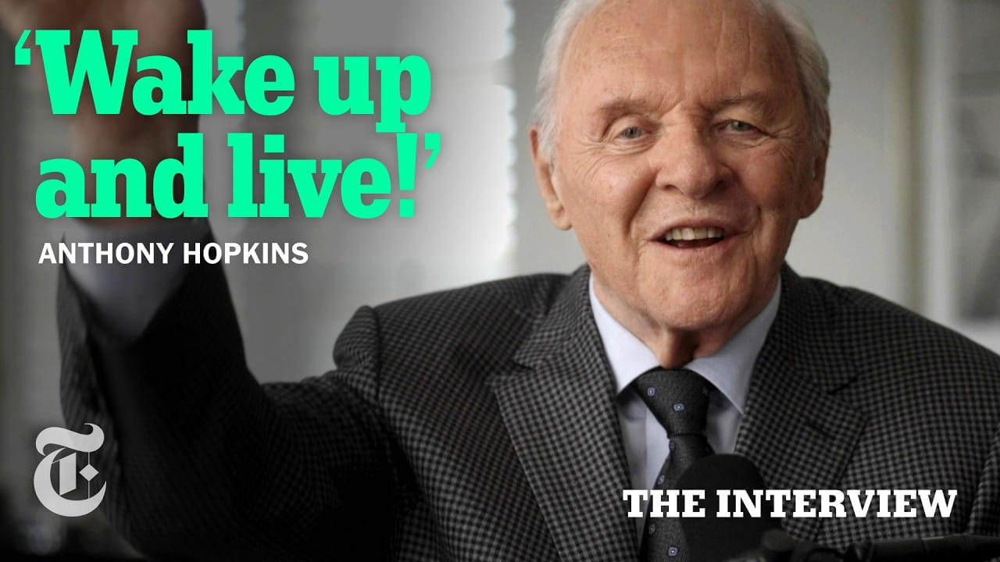

The Day Anthony Hopkins Quit Drinking | The Interview

Summary
This interview discusses the background of life, acting career, and philosophy of Sir Anthony Hopkins, who managed to overcome his challenging childhood and develop into an outstanding actor of contemporary cinema. Coming from the poor family in Wales, Anthony Hopkins found himself at odds with society, being subjected to discouragement and alienation. However, he has grown into an extremely determined individual, who discovered acting as an escape from difficulties. A crucial period of transformation in his life was overcoming alcoholism through a critical personal experience that resulted in his personal awakening and change of attitude towards life. Another important aspect that Hopkins highlights is the significance of self-discipline and control over destructive thoughts.
In Hopkins’ acting approach, one of the essential tools is distance that helps him in the creation of such complicated roles in which he appears as a balanced person. To him, acting is an art form centered on narrative and presentation as opposed to ego. Besides acting, Hopkins explores himself through other creative pursuits like music, painting, and poetry.
As seen above, the entire discussion reveals Hopkins as a person full of resilience, creativity, and self-reflection.
Speaker /(Guest): Anthony Hopkins
Interviewer / Host: The Interview
Concept of the Interview: Quiet resilience, self-transformation, and the philosophy of
emotional control in life and art
Personal Opinion
Anthony Hopkins is one of the actors I really admire, especially for his role in The Silence of the Lambs. While I admire Mads Mikkelsen’s version of Hannibal Lecter in the remake, Hopkins’ interpretation is more remarkable because it has much to offer in terms of subtlety and psychology. Apart from acting, what also impresses me about Anthony Hopkins is his approach to life, namely resilience, emotional balance, and ability to transform himself. In this sense, it is quite remarkable how his ability to capture the essence of such complicated characters matches his real-life behavior. Overall, this interview has increased my appreciation of him even more and inspired me to cultivate similar discipline and presence.
Reflection
TThrough this interview, I have gained insight into the power of personal experiences and mindset in creative and artistic endeavors. Through this interview, I discovered that Anthony Hopkins’ success as an actor stems from his talents as well as his discipline, emotional control, and ability to deal with his inner conflicts. This interview has inspired me to take a closer look at the role of self-control and personal development in my life as an important skill for overcoming obstacles and self-doubts. In addition, I came to realize the value of ongoing self-improvement and clarity of mind in achieving excellence in anything one does.
Date I Watched the Interview
July 13, 2026
New Vocabulary
- Introspection: the examination of one's own thoughts and feelings.
- Self-reinvention: The process of changing oneself through new habits, roles, or perspectives.